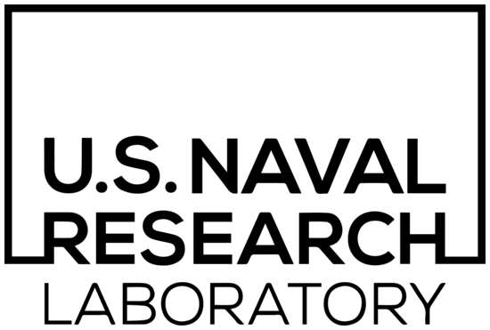

Kellen Gillespie
Research Scientist, Superhuman (formerly Grammarly)
I build production ML systems that leverage context — conversational, visual, and preferential — to understand user intent and make decisions at scale. My work spans contextual query rewriting and speech processing (Alexa), multimodal reasoning and personalization (Amazon AGI), and LLM-based orchestration for large tool libraries (Superhuman).



Experience
- 2024 – present: Research Scientist, Superhuman (formerly Grammarly) — LLM orchestration, tool routing at scale, multi-step planning
- 2015 – 2024: Applied Scientist → Senior Applied Scientist, Amazon AGI & Alexa AI — contextual query rewriting, device directedness, speech/whisper detection, personalization, multimodal reasoning
- 2010 – 2015: Senior Scientist, Knexus Research Corporation (US Naval Research Laboratory) — goal reasoning, planning, spatial reasoning, NLU for autonomous systems
- 2009 – 2010: AI Researcher, InSyTe Lab, Lehigh University — case-based reasoning, reinforcement learning
Research Interests
- LLM orchestration: tool routing, retrieval-augmented dispatch, and code execution at scale
- Multi-step planning and selective escalation for agent systems
- Contextual language understanding: query rewriting, coreference, and dialogue state
- Speech and multimodal signal processing: device directedness, whisper detection, visual grounding
- Personalization, content ranking, and image retrieval with LLMs
- Goal reasoning and planning for autonomous agents
Publications
Scalable Orchestration: Routing and Retrieval for Large Tool Catalogs
EMNLP 2026 Industry Track (under review)
CIKM 2023
ACL 2023
ICASSP 2020
IEEE SLT 2018
ACS Workshop on Goal Reasoning 2015
Goal Reasoning: Papers from the ACS Workshop
Georgia Institute of Technology 2015
ICCBR Workshops 2015
eBotworks: A Software Platform for Developing and Evaluating Communicative Autonomous Systems
AUVSI Unmanned Systems 2015
ACS Workshop on Goal Reasoning 2015
ICCBR 2014
CoSLI Workshop 2011
ICCBR 2010
See Google Scholar for a full list.
Patents
Supplemental Content Recommender
US Patent App. P85156-US01 (filed 2024)
Intent Re-ranker
US Patent 11,227,585 (2022)
Contextual Entity Resolution
US Patent 11,081,107 (2021)
Intent Re-ranker
US Patent 10,600,406 (2020)
Contextual Entity Resolution
US Patent 10,229,680 (2019)
Selected Projects
Lead IC on Alexa Follow-Up Mode — device-directedness classifier combining acoustic and semantic features. Feature has >2M WAU.
Lead IC on Contextual Query Rewriting — seq2seq model resolving anaphora and ellipsis in dialogue. Improved contextual traffic coverage by 22%. Feature has >10M WAU.
Co-developed LSTM-based whisper detection model enabling Alexa Whisper Mode. Feature has >5M WAU.
Education
- M.S., Computer Science and Engineering — Lehigh University, 2010. Advisor: Hector Muñoz-Avila
- B.S., Computer Science and Engineering — Lehigh University, 2009. Minor: Philosophy. President’s Scholar Award